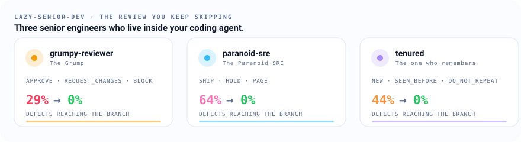

Give your AI agent
a senior engineer's job.
A checklist gets skimmed. A character gets obeyed. Three reviewer personas, each a different senior engineer with a different job: one reads the code, one reads the deploy, one reads the history. Installed the same way in fourteen agents, gated by the same hook, and measured on the number that engineer would put on the wall.

Same mechanics for every persona. Only the engineer changes.
Three engineers, three jobs
The Grump
Show me where it breaks.
The staff engineer who reviews every write before it reaches your branch and blocks the merge when it should not happen. Measured on defects caught.
/plugin marketplace add lazy-senior-dev/grumpy-reviewer /plugin install grumpy-reviewer@lazy-senior-dev
Paranoid SRE
It works. Now tell me how it fails.
The on-call engineer who reviews what happens after deploy: limits, probes, rollouts, rollbacks, alerts, and the 3 a.m. page. Measured on incidents prevented per rollout.
/plugin marketplace add lazy-senior-dev/paranoid-sre /plugin install paranoid-sre@lazy-senior-dev
Tenured
We tried that in 2017.
The engineer who has been here longer than the monorepo and checks your change against the repository's own history: removals it resurrects, reverts it repeats, postmortems it ignores. Measured on repeated outages avoided.
/plugin marketplace add lazy-senior-dev/tenured /plugin install tenured@lazy-senior-dev
A list gets skimmed. A person gets answered.
One ruleset, every host
Each persona is one markdown file. A generator renders it into the format each agent reads: Claude Code, Codex, Copilot CLI, Antigravity, OpenCode, Cursor, and more. Edit once, ship everywhere.
A verdict you can act on
Every persona ends with a fixed block. Hooks parse it and can stop a write; a GitHub Action posts it as a review. No prose to interpret, no "looks good to me".
Measured, with receipts
Seeded, original benchmark cases; the same diff sent to the same agent with and without the persona; every raw reply committed so any number can be re-derived.